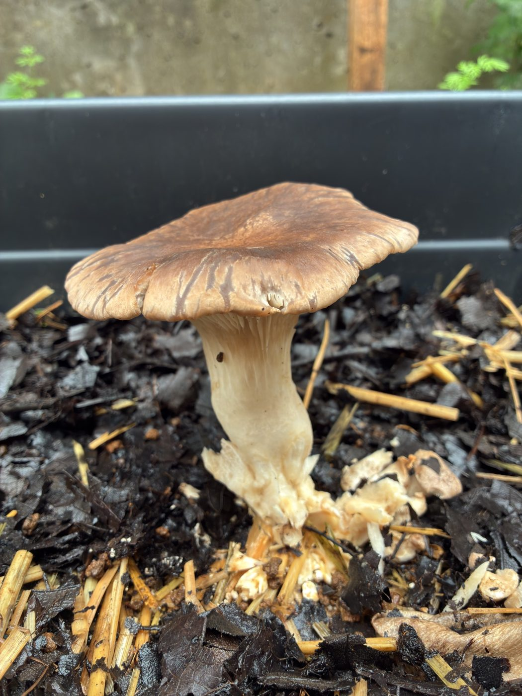
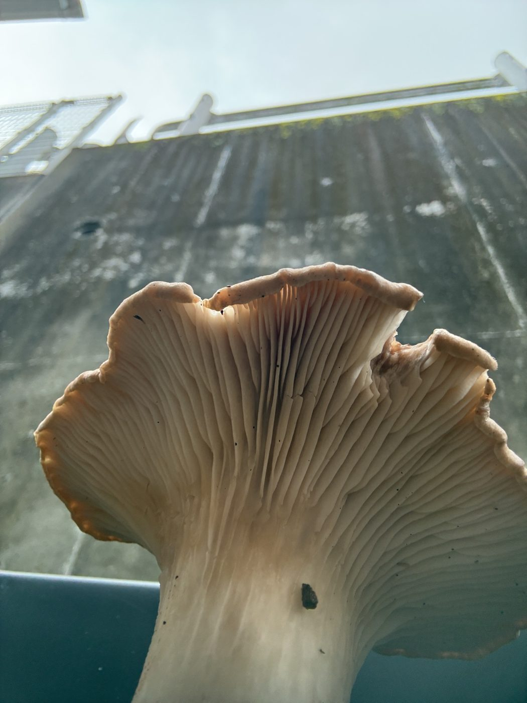
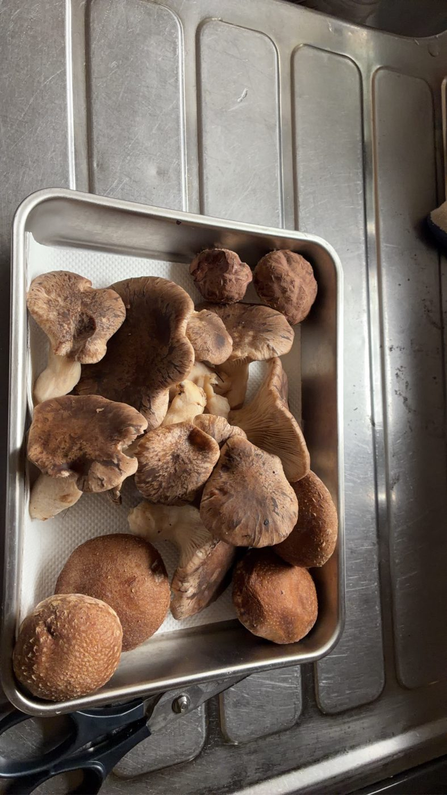
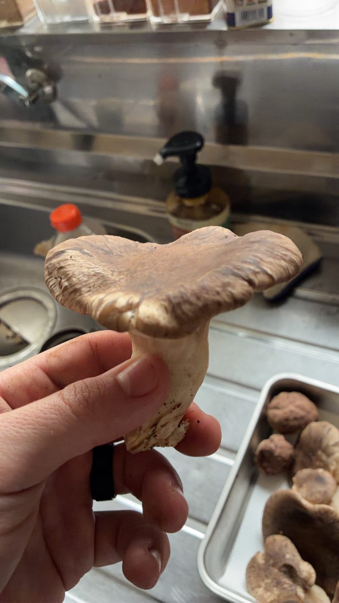

Preprint · Pilot observation with pre-registered follow-up
Independent grower, Tanzawa–Oyama foothills, Kanagawa, Japan
Background. King oyster (Pleurotus eryngii, エリンギ) is grown commercially on sterilised sawdust and corncob in bottles and bags. In nature it is a weak parasite and decomposer of the roots of Apiaceae. Outdoor log culture has failed: a prefectural trial in Aichi got no fruit on any of six log woods. We know of no report of growing it on fresh, unsterilised root vegetables.
Methods. Fresh carrots (Daucus carota, Apiaceae) were pulled, inoculated with pieces of a colonised commercial eringi kit block, and buried again in an outdoor bed under a shade net. The bed was covered with a straw and leaf-litter casing to hold CO2 around the developing primordia. Fruiting was recorded by date and photographed. From 19 November 2026 the method changed: a multispore slurry is now delivered into the buried carrots through watering globes, and liquid culture will follow.
Results. Primordia emerged through the casing on 11 November 2026, and mature fruit bodies were harvested by 19 November 2026. The fruit bodies had broad, flat to depressed, lobed brown caps with dark radial streaks over the outer half (a "zebra" pattern) on short, curved stipes, the reverse of the small-capped, thick-stemmed indoor form. In an informal tasting by five people against store-bought supermarket eringi, they were judged "more meaty".
Conclusions. Eringi can complete fruiting outdoors in Japan from kit inoculum buried with fresh carrot under a casing. This one bed does not show that the carrot was used as a substrate, that taste differs, or why the caps are streaked. A randomised, blinded protocol with kit-only and carrot-only controls, a blind taste panel and umami chemistry is set out to test each point.
Keywords: Pleurotus eryngii; Apiaceae; Daucus carota; non-sterile cultivation; casing; morphology; umami; spore slurry; pre-registration
Pleurotus eryngii is unusual among cultivated oyster mushrooms. In the wild it is not a wood-rotter. It grows on the roots and root crowns of umbellifers, especially Eryngium, as a weak parasite and then a decomposer [1]. Commercial eringi does not use this ecology: it is grown indoors on sterilised sawdust, corncob and bran in bottles or bags, under controlled CO2, light and humidity.
Attempts to bring eringi outdoors on wood have not worked. In a three-year prefectural programme in Aichi, eringi inoculated into logs of six species (アカメガシワ, オオバヤシャブシ, コナラ, ツブラジイ, ホオノキ and ヤマザクラ) gave no fruit. The failure was put down to Trametes and other competitors during incubation [2]. The substrate also changes eringi quality: on willow sawdust it scored highest for taste and texture against birch sawdust and corncob [3].
Carrot is in the Apiaceae, the family eringi parasitises in nature. Its use with eringi appears limited to dried, sterilised carrot as a substrate additive; we did not find any report of fresh, living or freshly pulled carrot root used as a substrate. This was not a systematic search, and we would welcome references. If eringi can use fresh Apiaceae roots in open ground, that would offer an outdoor, non-sterile way to grow it that follows its natural ecology rather than wood.
This paper reports one pilot bed, states plainly what it can and cannot show, and sets out the pre-registered trial (P02) that will test it.
The bed is part of an open-air growing area in the Tanzawa–Oyama foothills, Kanagawa Prefecture, Japan. It sits under a shade net in a frame tent with no air filtration, over a deep leaf-litter floor. It is watered by hand with a hose. There is no misting or climate control.
The following were not recorded for the pilot: the inoculation date, the number and mass of carrots, the mass of kit used, the casing depth, and temperature or humidity. There were no control beds.
From 19 November 2026, carrots are inoculated with a spore slurry: spores from carrot-grown fruit bodies suspended in water and delivered into the buried carrots through glass watering globes pushed into the soil. The aim is to let the eringi population adapt to carrot over repeated rounds. The grower plans to switch later to liquid culture.
Why the switch matters genetically. Kit pieces carry one strain, a clone of the kit's dikaryotic mycelium. A spore slurry carries many different spores. P. eryngii is heterothallic: compatible spores must germinate and mate to form a dikaryon that can fruit. So each fruiting patch from slurry may be a new genotype, not the kit strain. Selection for carrot adaptation can act only through which fruit bodies supply the next round. A liquid culture made from tissue of a chosen fruit body would fix that genotype again.
For every bed from now on the project records: the inoculum type (kit, slurry or liquid culture); the source fruit body for each slurry or culture (photo, date, bed); the generation number (kit = G0, first slurry from carrot-grown caps = G1, and so on); and a retained spore print or tissue sample from each source. Templates are in the repository.
| Date | Observation |
|---|---|
| 11 Nov 2026 | White primordia and young pins emerge through the straw and leaf-litter casing |
| by 19 Nov 2026 | Mature fruit bodies harvested, filling a kitchen tray (Fig. 1c) |
| 19 Nov 2026 | Informal 5-person tasting against supermarket eringi; method changes to spore slurry (§2.3) |
Fruit bodies arose from the casing, with the stipe bases rooted in casing material and pale fragments of substrate (Fig. 1a). Whether those bases were attached to carrot tissue, to kit pieces or to both was not checked.




| Feature | Carrot-bed fruit bodies | Typical commercial eringi |
|---|---|---|
| Cap | Broad (several cm), flat to slightly depressed, lobed and wavy margin, mid-brown | Small, convex, on a thick stem |
| Cap surface | Dark brown radial streaks and stripes over the outer half ("zebra"); the centre is evenly brown | Even pale grey-brown |
| Gills | Cream, crowded, strongly decurrent | Same |
| Stipe | Short to medium, often curved, tapering to a rooting base | Long, thick, straight, cylindrical |
No measurements were taken. The description is from four photographs and should be read as qualitative.
Five people tasted the carrot-bed eringi against eringi bought from a Japanese supermarket. The grower's summary:
"The taste of them is more meaty." (H. Al-Witti, 19 November 2026)
It was not recorded whether tasters knew which sample was which, how the samples were cooked, or how many of the five agreed. No scores or other attributes were recorded. We treat it as an informal comparison.
Eringi completed fruiting outdoors, in open, non-sterile ground in Kanagawa, from kit inoculum buried with fresh carrot under a casing. That matters because the only Japanese outdoor trial we know of, on logs, gave no fruit [2]. The quick move from primordia to harvest (about eight days) and the casing approach suggest that controlling the micro-climate at the soil surface, rather than the wood or sterility, may be what makes outdoor eringi possible.
That carrot was the substrate. A colonised kit block holds enough nutrition to fruit on its own. With no kit-only bed, we cannot tell whether the carrot added anything, served only as a moist anchor, or was colonised at all. Nobody split a carrot to look for mycelium.
That carrot changes taste. Five tasters is a small, informal panel, and the comparison differs from the carrot eringi in much more than carrot. The supermarket eringi was (i) a different, unknown strain; (ii) less fresh, days from harvest rather than hours; (iii) at a different maturity, harvested young with a small cap, while these caps were broad and mature; and (iv) from a different growing system: indoor, sterile sawdust or corncob, high CO2, low light. Each of these can change perceived meatiness on its own. If tasters knew which sample was which, expectation adds a fifth. The comparison shows the carrot eringi is worth testing. It cannot say why it tasted different.
Why the caps look as they do. The broad cap and short stipe are expected without any carrot effect. Commercial eringi is grown at high CO2 and low light, conditions that lengthen the stipe and keep the cap small. Under a casing that vents into open air, with daylight, a broader-capped "wild-type" form is plausible. For the radial streaks we hold three untested hypotheses: (i) light raises cap pigmentation, which is laid down unevenly along radial hyphae; (ii) drying by wind tightens or cracks the cap cuticle, exposing darker tissue in radial lines; (iii) fine radial patterning is normal on broad caps grown in low CO2 and full light.
If a blind panel confirms a difference, several mechanisms are worth testing. Substrate sugars and nitrogen can change the free amino acids and 5′-nucleotides that drive umami in mushrooms, and log-grown maitake and nameko are richer in umami components than bed-grown [4, 5]. Light exposure and lower water content in an outdoor fruit body could concentrate flavour. And, from 19 November, a different genotype from spore slurry could carry its own flavour. None of these has been measured here.
The switch to spore slurry turns the bed into a crude selection line: each round, the fruit bodies that do best on carrot provide the next round's spores. Whether this produces a line better adapted to carrot is a fair question, but it is easy to confound. Slurry beds hold a shifting mix of new genotypes, so any change in fruiting or taste could be chance, genotype or carrot. The clean test is to fix the selected line as a tissue-clone liquid culture and grow it beside the original kit strain on carrot (§5).
Protocol P02 (in the repository; to be registered on OSF before inoculation in spring 2027) tests each claim separately.
| Question | Test |
|---|---|
| Did carrot add anything, or did the kit fruit alone? | Three arms in 12 randomised rows (36 plots): carrot + kit, kit only (same mass and depth), carrot only (no inoculum). Day-60 carrots split and scored blind for mycelium. |
| Is it really meatier? | A blind panel of 24 under red light, with coded samples, Williams-balanced order and pan-seared slices without salt, scoring umami/savoury-meaty intensity on a 0–100 line scale. Power 0.74 for a 10-point difference and 0.97 for 15 (SD 18 assumed). |
| Is there more umami chemistry? | HPLC free amino acids and 5′-nucleotides, combined as equivalent umami concentration (EUC, Yamaguchi's synergy equation), per g dry weight, 12 plot replicates per arm. |
| Meatier than what you can buy? | The same panel against commercial eringi of the same strain, bought fresh. This repeats the informal 5-person comparison with strain held constant and tasters blind. |
| Potency | Ergothioneine (HPLC) and β-glucan (Megazyme). |
| Why the zebra streaks? | Within carrot + kit plots, half of each plot under a 70% shade cloth with a damp hessian skirt. Streaking scored 0–3 from standard photos by a blind scorer. |
| Is it eringi? | Spore prints from every fruiting plot; ITS barcoding of at least 3 fruit bodies against the source kit. |
| Does carrot select an adapted line? | Sub-study §6b: tissue-clone liquid culture from the best slurry-bed fruit body against the original kit strain (G0), both on carrot, in 6 randomised rows. Colonisation, blind taste, EUC and ergothioneine. |
All arms are harvested at the same stage (cap margin still inrolled, cap ≤ 6 cm), on the same day, from the first flush. The plot, not the cap, is the unit. Yield is deliberately not an outcome: the project's interest is culinary quality and chemical potency. Results will be published whichever way they go.
Photographs, the observation record (OBS-01), the evidence rows (EV0121, EV0153), protocol P02, power calculations, randomisation script and data templates are at github.com/alwittihakam-cyber/9thtarot_mushrooms. Text, data and photographs are under CC BY-NC-SA 4.0; code is under MIT.
Literature review, evidence grading, drafting and protocol design were assisted by Claude (Anthropic), an AI model. The author did the growing and photography and ran the tasting; thanks to the five tasters, and is responsible for the content.
data/sources.csv, and summarised in docs/quality-methods.md §6.Suggested citation: Al-Witti H. (2026). King oyster mushroom (Pleurotus eryngii) fruiting outdoors from fresh, unsterilised buried carrot: a pilot observation, an altered morphology, and a protocol to test it. Preprint v1, 19 November 2026.